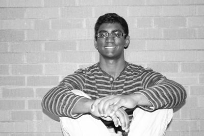
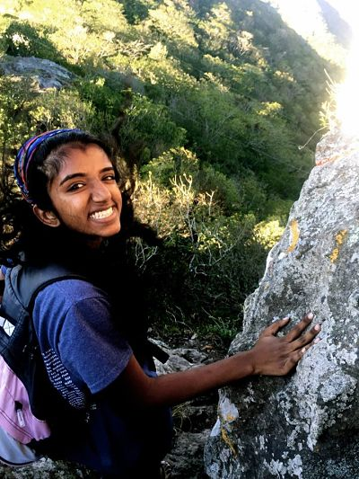

Meet the Founders
Vijay Manohar

Vijay is a computer engineering undergraduate at The University of Texas at Austin. Vijay is a member of the Longhorn Entrepreneurship Agency and is heavily involved in Austin’s startup scene. He’s also a contributor to 2 Billion Under 20, a community and book (St. Martin's Press, Summer 2015) empowering young individuals to pursue their dreams.
Vijay spent his junior and senior years in high school at the Texas Academy of Math and Science, a selective, early college entrance program at the University of North Texas. It was here that he got a first taste of entrepreneurship. The Murphy Center for Entrepreneurship at UNT held the IDEA competition, a pitch competition to identify promising ideas. Vijay decided to submit an idea he had been tinkering with – PCs2Prosper. After winning this competition, Vijay was encouraged to enter the New Venture Creation Contest, UNT’s business plan competition. He won a $5,000 grant, validating his idea.
A pilot program helped 16 schoolchildren in the Denton area, and Vijay’s story was featured on NBC news. He has approached Jerry Jones (owner of the Dallas Cowboys), Karen Hughes (advisor for then President Bush), and C-level executives in the Dallas area for opportunities to grow the business. He helped launch PCs2Prosper’s chapter at Glenda Dawson High School in Pearland, TX.
Roja Manohar

Roja is a freshman pre-med student at Texas A&M University. She is the VP of Fundraising of TAMU's Global Medical Brigades chapter and a member of TAMU's Emergency Care Team, as well as the founder of the Texas Academy of Math and Science's PCs2Prosper chapter.
As one of the founding directors of PCs2Prosper, Roja understands that a computer is no longer a luxury but an essential item in everyday life. She wants to find a computer for those who cannot afford one on their own.
Roja understood that one major issue with used computers is that they typically do not come with an operating system, such as Microsoft Windows, which is what makes modern computers so useful. Brainstorming with Vijay, Roja realized that you can breathe new life into these retired computers by installing open source, easily accessible software such as Linux and Open Office which suits the needs of most people, especially students.